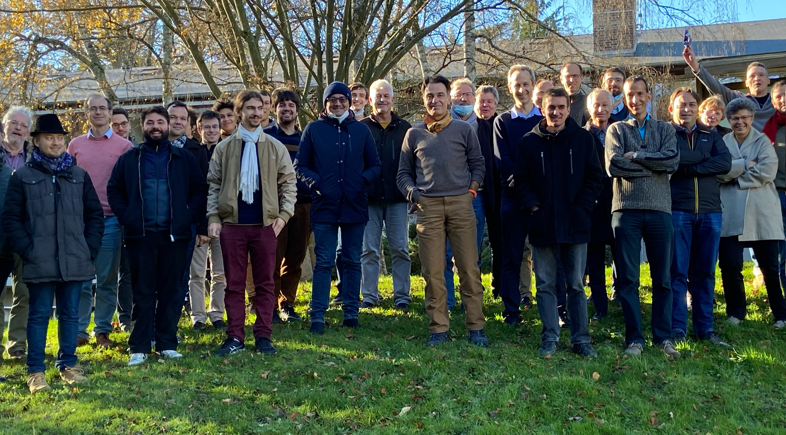

Participants

(Sorry to those who missed the group photo; see also this
enhanced version.)
- Baptiste ALLORANT, University of Kiel
- Guillaume BAUDART, Inria/ENS
- Albert BENVENISTE, Inria
- François BIDET, LIX, CNRS, École polytechnique, Institut Polytechnique de Paris
- Timothy BOURKE, Inria/ENS
- Vincent BREGEON, Airbus
- Benoît CAILLAUD, Inria Rennes
- Etienne CLOSSE, Dassault Systemes
- Robert DE SIMONE, Inria
- Gwenaël DELAVAL, Université Grenoble Alpes
- Kai ENGELHARDT, Ghost Locomotion
- Frédéric FORT, Université de Lille
- Alain GIRAULT, INRIA
- Colin GONZALEZ, IRIF, NOMADIC LABS
- Thérèse HARDIN, Inria
- Erwan JAHIER, Verimag/CNRS
- Paul JEANMAIRE, Inria/ENS
- Bertrand JEANNET, Dassault Systèmes
- Luigi LIQUORI, INRIA
- Frederic MALLET, Inria Sophia Antipolis Méditerranée
- Florence MARANINCHI, VERIMAG
- Michael MENDLER, University of Bamberg
- Xavier NICOLLIN, Grenoble INP - UGA
- Astyax NOUREL, IRIF
- Yann ORLAREY, GRAME
- Baptiste PAUGET, ANSYS/Inria/ENS
- Basile PESIN, Inria/ENS
- François PESSAUX, ENSTA
- Hugo POMPOUGNAC, Inria
- Dumitru POTOP BUTUCARU, Inria
- Marc POUZET, ENS/Inria
- Pascal RAYMOND, VERIMAG/CNRS
- Lionel RIEG, Verimag
- Tanguy RISSET, Insa-lyon/Inria
- Fabien SIRON, Krono-Safe/INRIA
- Ada VIENOT, IRIF, Université de paris
- Reinhard VON HANXLEDEN, Kiel University
{kind=link}
{kind=link}